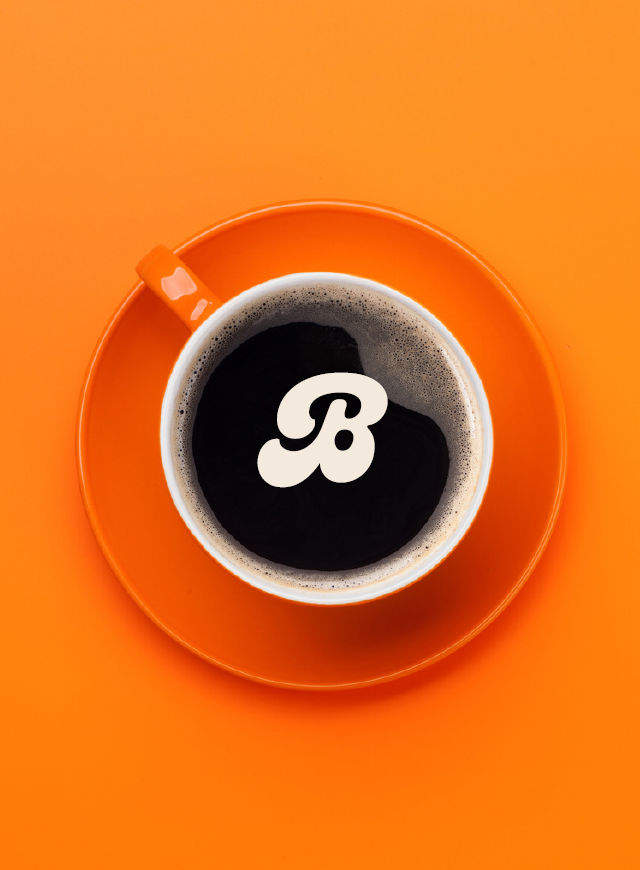
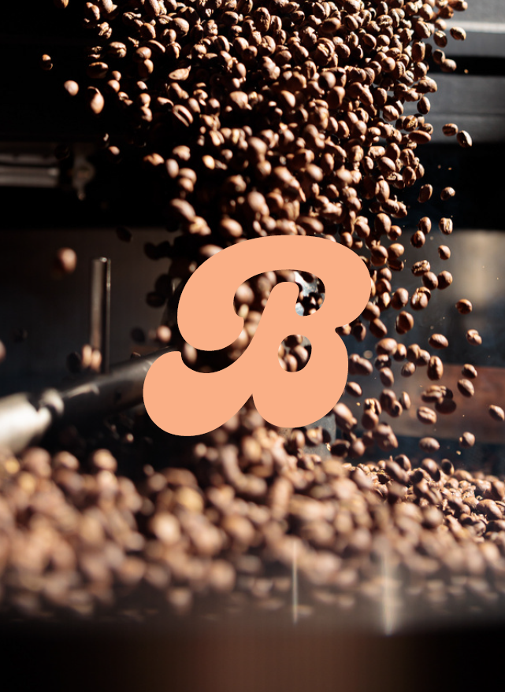

About Us
Borcelle Coffee Roastery is positioned to be a unique, nostalgic, and health-focused dining experience catering to the growing demand for sustainable, plant-based options in a market longing for a throwback to the past
Founding Story
Borcelle Coffee Roastery was established by a group of coffee aficionados and culinary experts who shared a passion for quality, nostalgia, and wellness. They recognize a growing demand for plant-based options and a yearning for a throwback dining experience, leading them to create a space where these elements can harmoniously blend.